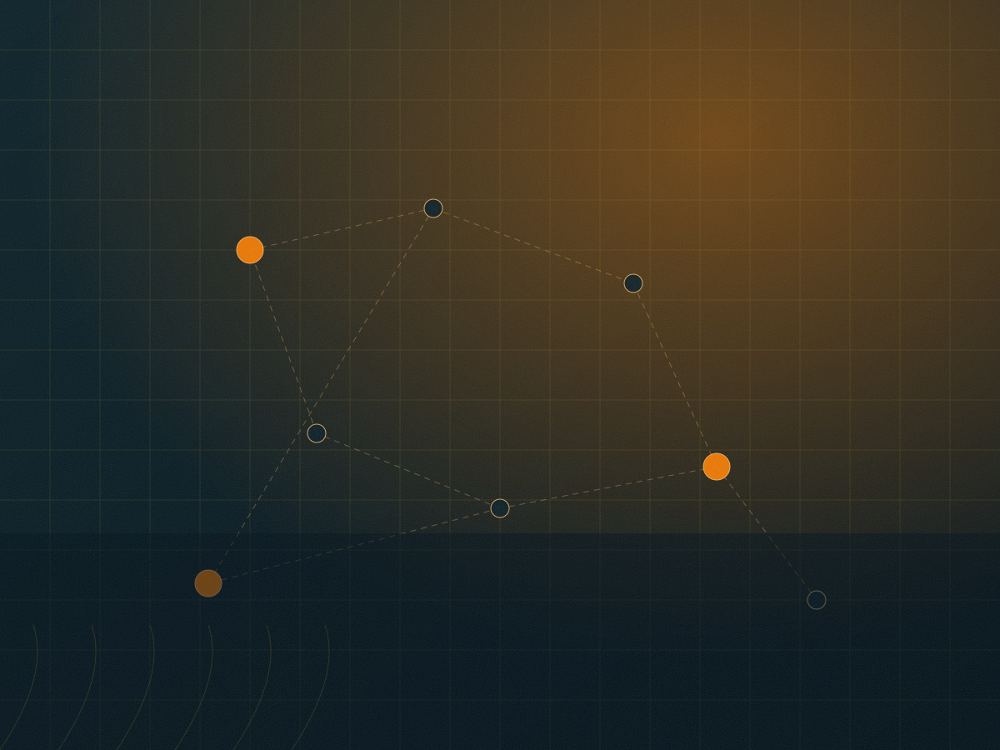

Benadir orientation
A starting point for locating a context, without defining the full reach of community ties or historical movement.
The archive begins with Benadir as a point of orientation while remaining attentive to wider coastal, inland, urban, rural, and diasporic connections.

Context plateIllustrative plate — not archival evidence.
Place labels may be historical, contemporary, approximate, translated, or contested, and should be read with their stated limits.
A starting point for locating a context, without defining the full reach of community ties or historical movement.
Ports, fishing, trade, and travel link settlements in ways registers rarely capture. These are questions, not routes.
Kinship, grazing, and markets connect inland and riverine communities. Naming may differ between records and local usage.
Remittance, correspondence, and return shape how histories are remembered — and may preserve material absent locally.
This archive uses “Biimaal / Bimal” as an inclusive working form. Terminology can vary across language, family, place, period, source type, and personal preference.
The archive records variation with care rather than treating one spelling as universally final. Where terminology is translated, abbreviated, inherited from a catalogue, or supplied by a researcher, that condition should be visible.
“Biimaal” — used here as one visible archive term. Its appearance does not establish a single pronunciation, boundary, lineage, or meaning across every source.
“Bimal” — included as a variant that may appear in conversation, memory, scholarship, catalogues, or other records. Similar spelling is not assumed to mean identical context.
Community preference and self-description take priority over convenient archival shorthand.
A place name locates a description; it does not establish a boundary, a population, or a political claim.
| Label type | What it supports | What it does not support |
|---|---|---|
| Historical name | Locating a period-specific description | A claim that the name is current or exclusive |
| Administrative name | Reading a record by its own categories | A claim about local self-description |
| Approximate location | Orientation for a reader | Precision about a boundary or site |
| Contested name | Showing that naming is disputed | Adjudicating which name is correct |
| Withheld location | Protecting people or sites at risk | Inferring a location from description |
Testimony is held with context, consent, and the right to remain unfinished. The oral histories docket explains the conditions.
Press Esc to close · searching page titles and descriptions